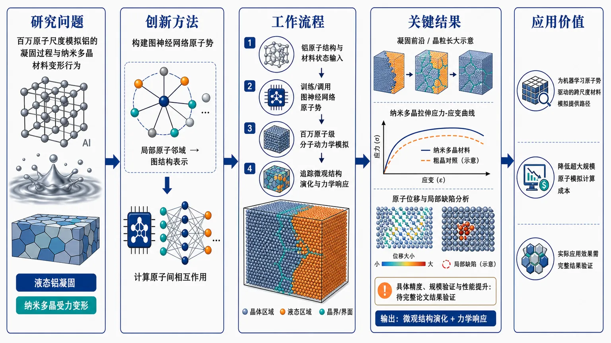
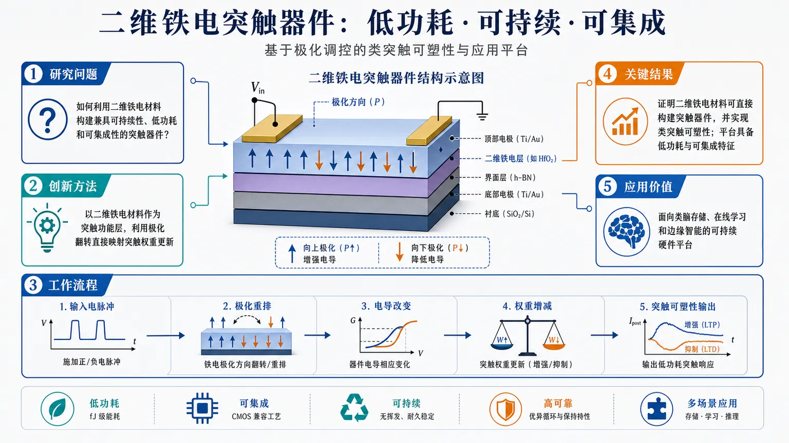
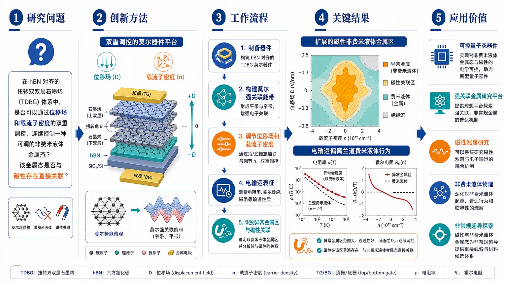
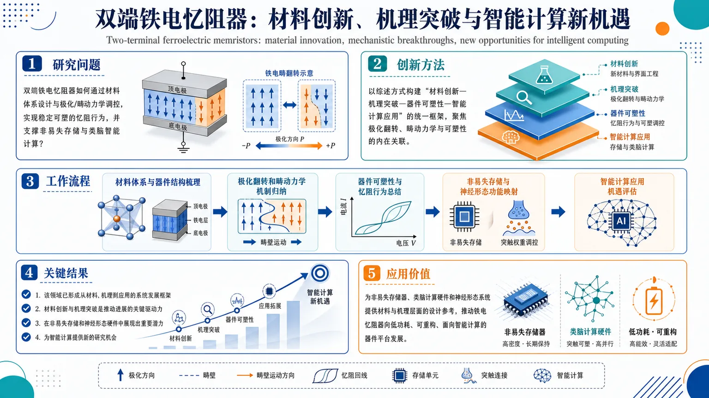
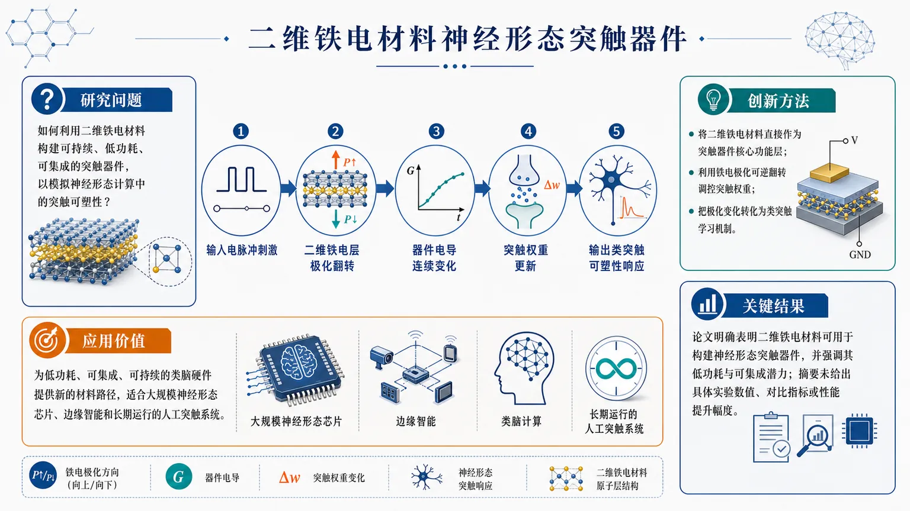
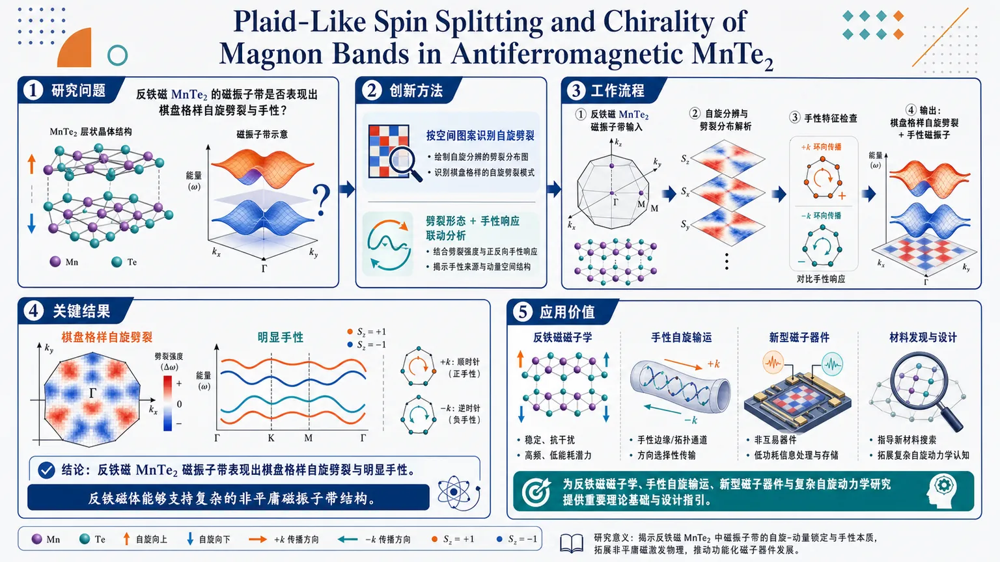
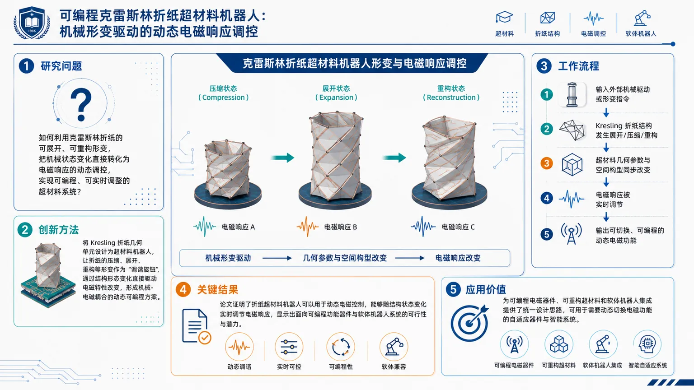
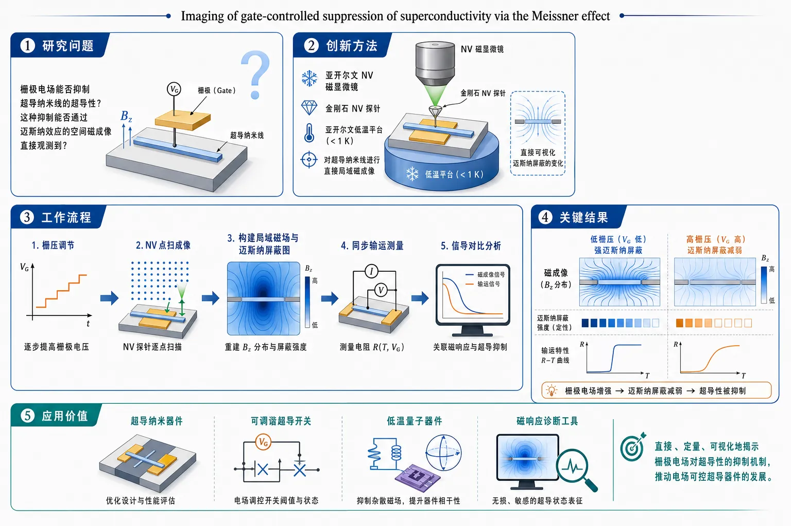
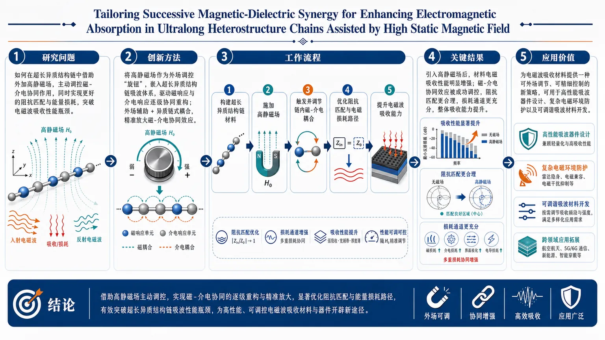

AI × Science 文献日报 2026/07/18
聚焦 AI × 物理 / 化学 / 材料交叉方向，自动过滤明显偏题的医学、教育与社会科学内容，并按主题重新排版，便于快速深读。
AI | 物理 | 化学 | 材料 | 交叉学科
原始候选 11 篇中，已剔除 0 篇明显偏离主线的内容，并从剩余 11 篇主线相关文献中精选 10 篇进入日报页，优先保留 AI × 物理 / 化学 / 材料交叉与关键计算方法工作。
核心关注（ML × ferro / 凝聚态）
8 篇今天真正落到 ML 原子尺度的是 Al：GNN 势把凝固与纳米多晶变形推到百万原子，问题从 DFT 精度外推到相变与塑性统计。与 NbOI2、BaTiO3 等铁电体常用的 DFT+U 数据库加 MACE、NEP、equivariant GNN 势路线相比，本日铁电器件条目仍停留在二维铁电突触和两端忆阻器机制框架，缺少可复现实测参数。MnTe2 磁振子手性补上反铁磁凝聚态谱学线索，可与 CrI3、CrSBr 自旋哈密顿量拟合及机器学习自旋动力学对接。栅控超导的 NV 迈斯纳成像、折纸电磁超材料和磁-介电异质链扩展了可被 ML 反演的场响应数据类型。
-
01GNN 势模拟铝凝固与纳米多晶变形Aluminum solidification and nanopolycrystal deformation via a graph neural network potential and million-atom simulations
📄 摘要：面向铝体系，构建图神经网络原子间势并用于百万原子级分子动力学，覆盖液态凝固过程和纳米多晶变形。题名显示重点在以机器学习势连接近第一性原理精度与大尺度时空模拟；摘要未给出训练集规模、误差、晶粒尺寸或力学响应数值。
💡 亮点：GNN 势被用于百万原子铝凝固和纳米多晶变形模拟。该路线将机器学习势从小胞验证推进到金属相变与塑性的大尺度原子动力学。
📐 方法要点：Al 专用 GNN 原子间势驱动百万原子凝固与纳米多晶变形 MD。
🔗 相关工作关联：呼应 MACE、NEP、equivariant GNN 势与主动学习势能面构建。
💡 对你方向的启示：把 ML 势用于相变和塑性统计时，应同时检验液态、晶界、缺陷与应变外推。
-
02二维铁电材料可持续突触器件Sustainable Synaptic Device with Two‐Dimensional Ferroelectric Materials for Neuromorphic Computing (Adv. Sci. 40/2026)
📄 摘要：围绕二维铁电材料构筑神经形态突触器件，目标是以铁电极化的非易失调控实现类突触权重存储与更新。期刊条目仅给出题名、作者和卷期，未列出具体材料组成、器件结构、开关电压、保持时间、耐久性或能耗数值。
💡 亮点：二维铁电材料被用于可持续神经形态突触器件，核心在非易失极化调控电导权重。该方向把低维铁电性与类脑计算硬件直接耦合。
📐 方法要点：二维铁电材料作非易失突触权重介质，面向神经形态器件。
🔗 相关工作关联：关联 CuInP2S6、In2Se3、HfO2 铁电突触和铁电隧穿结方向。
💡 对你方向的启示：ML 可用于极化态、电导态和脉冲历史映射，但需器件级循环数据支撑。
-
03反铁磁 MnTe2 中格纹状磁振子劈裂Plaid‐Like Spin Splitting and Chirality of Magnon Bands in Antiferromagnetic MnTe2
📄 摘要：研究反铁磁 MnTe2 的磁振子能带，题名指出存在格纹状自旋劈裂以及磁振子能带手性。条目未提供实验手段、谱学能量尺度、理论模型参数或温度范围；可确定的结论是该反铁磁体中磁激发兼具动量依赖劈裂与手性特征。
💡 亮点：MnTe2 反铁磁体中出现格纹状磁振子自旋劈裂与手性能带。该结果把反铁磁自旋波的动量纹理和手性输运问题推向具体材料平台。
📐 方法要点：聚焦 MnTe2 反铁磁磁振子能带的格纹状自旋劈裂与手性。
🔗 相关工作关联：呼应 CrI3、CrSBr、MnBi2Te4 的自旋波谱和反铁磁自旋电子学。
💡 对你方向的启示：可将谱学能带转化为自旋哈密顿量参数，用 ML 拟合交换与各向异性。
-
04二维铁电材料神经形态突触器件Sustainable Synaptic Device with Two‐Dimensional Ferroelectric Materials for Neuromorphic Computing
📄 摘要：该条目与序号 2 为同题同作者的二维铁电突触器件论文，刊于 Advanced Science 第 13 卷第 40 期。摘要信息未披露材料体系、制备路线、突触可塑性指标或循环稳定性；题名强调可持续材料选择与神经形态计算器件应用。
💡 亮点：二维铁电突触器件以极化态作为可调记忆变量，面向神经形态计算。与传统电荷俘获或离子迁移突触相比，其关键优势指向非易失和低功耗权重调节。
📐 方法要点：同第 2 篇：二维铁电突触器件，强调可持续材料与权重更新。
🔗 相关工作关联：关联二维铁电、铁电忆阻器、类脑计算和低功耗非易失存储。
💡 对你方向的启示：重复条目提示需去重；后续应抽取材料、结构、电压、保持与耐久性数据。
-
05两端铁电忆阻器的材料与机理Two-terminal ferroelectric memristors: material innovation, mechanistic breakthroughs, new opportunities for intelligent computing
📄 摘要：综述两端铁电忆阻器，覆盖材料创新、阻变机理突破以及智能计算机会。题名和出版信息显示重点在铁电极化、界面势垒或畴结构调控电导的两端器件；摘要未给出具体材料清单、性能统计或基准数值。
💡 亮点：两端铁电忆阻器被系统梳理为智能计算硬件候选，核心是用铁电极化调制电导。该综述把材料、机理和存内计算机会放在同一器件框架下。
📐 方法要点：综述两端铁电忆阻器的材料、极化调阻机理与智能计算场景。
🔗 相关工作关联：呼应 HfO2、BaTiO3、PZT、铁电隧穿结和畴壁电导方向。
💡 对你方向的启示：适合整理成结构化基准库：材料、界面、脉冲协议、ON/OFF、能耗。
-
06迈斯纳效应成像栅控超导抑制Imaging of gate-controlled suppression of superconductivity via the Meissner effect
📄 摘要：在亚开尔文温区使用扫描氮-空位磁强计成像薄超导纳米线。结果显示栅压不仅可在输运中猝灭超电流，也会抑制迈斯纳屏蔽；因此栅控超导抑制并非单纯接触或输运读出效应，而是体现在磁响应通道中。
💡 亮点：扫描 NV 磁成像直接看到栅压削弱超导纳米线的迈斯纳屏蔽。该证据把栅控超导抑制从输运异常提升为可空间成像的磁响应变化。
📐 方法要点：扫描 NV 磁强计以迈斯纳效应成像栅控超导抑制。
🔗 相关工作关联：关联 SQUID/NV 磁成像、栅控超导、薄膜纳米线与相刚度测量。
💡 对你方向的启示：输运与磁响应可联合建模，ML 反演局域超流密度和栅压非均匀性。
-
07基于克雷斯林折纸的电磁调控机器人Kresling Origami‐Based Metamaterial Robot for Dynamic Electromagnetic Control
📄 摘要：提出基于 Kresling 折纸结构的超材料机器人，用机械构型变化实现动态电磁控制。条目未给出工作频段、调制深度、驱动方式或响应时间；从题名可确定其将可变形折纸单元、机器人运动和电磁超材料功能耦合。
💡 亮点：Kresling 折纸超材料机器人通过形变调节电磁响应。该策略把可编程结构力学引入动态电磁器件，而非依赖固定几何超表面。
📐 方法要点：Kresling 折纸超材料机器人通过构型变形动态调控电磁响应。
🔗 相关工作关联：呼应可编程超材料、机械超材料、变形天线和软机器人方向。
💡 对你方向的启示：可用 ML 建立几何参数、姿态和电磁谱之间的可逆设计映射。
-
08高静磁场助异质链增强电磁吸收Tailoring Successive Magnetic‐Dielectric Synergy for Enhancing Electromagnetic Absorption in Ultralong Heterostructure Chains Assisted by High Static Magnetic Field
📄 摘要：利用高静磁场辅助构筑超长异质结构链，调控连续的磁-介电协同以增强电磁吸收。题名强调链状异质结构、磁性与介电损耗匹配以及外场辅助制备；摘要未给出组成、频段、反射损耗或有效吸收带宽数值。
💡 亮点：高静磁场辅助形成超长异质结构链，用连续磁-介电协同提升电磁吸收。该工作指向通过外场组装调控吸波材料的多损耗通道匹配。
📐 方法要点：高静磁场辅助构筑超长异质链，调控磁-介电协同吸波。
🔗 相关工作关联：关联磁介电复合吸波、链状各向异性、阻抗匹配和外场组装。
💡 对你方向的启示：ML 可优化组分、链长、取向和频段目标，但需反射损耗原始谱。
今日摘要
总览：今日 10 篇文献集中在机器学习势大规模材料模拟、铁电/突触器件、量子与磁性凝聚态、可重构电磁超材料和 AI 反向设计。代表性工作包括用 GNN 势开展百万原子铝凝固与纳米多晶变形模拟、NV 磁成像直接观测栅压抑制迈斯纳屏蔽、AI 反推 QLED 工艺并实现效率翻倍与寿命 40 倍提升。
热点：AI for science 从“加速计算”扩展到“反向确定工艺”：GNN 势服务原子尺度大体系动力学，AI 工艺搜索直接面向 QLED 器件性能。铁电材料仍是智能计算硬件热点，二维铁电突触器件与两端铁电忆阻器共同指向低功耗非易失突触和存内计算。凝聚态方向中，栅控超导、反铁磁磁振子手性、扭转双双层石墨烯非费米液体体现了电场、堆垛和自旋-晶格对集体态的精细调控。电磁功能材料则强调多尺度结构可编程：折纸机器人、异质链与高静磁场辅助策略用于动态电磁调控和吸波增强。
今日文献
10 篇 · 9 含图深析-
01
📊 含图深析
📄 摘要：面向铝体系，构建图神经网络原子间势并用于百万原子级分子动力学，覆盖液态凝固过程和纳米多晶变形。题名显示重点在以机器学习势连接近第一性原理精度与大尺度时空模拟；摘要未给出训练集规模、误差、晶粒尺寸或力学响应数值。
💡 亮点：GNN 势被用于百万原子铝凝固和纳米多晶变形模拟。该路线将机器学习势从小胞验证推进到金属相变与塑性的大尺度原子动力学。
📖 展开分析 + 配图

研究问题如何利用高精度且可扩展的原子模拟，在百万原子尺度上同时揭示铝凝固过程与纳米多晶塑性变形中的组织演化、晶界作用和尺度效应。创新方法引入图神经网络原子势，构建“机器学习势函数 + 百万原子级模拟”的统一框架，把铝的相变凝固与力学变形放在同一套高精度大尺度计算中联合研究。工作流程先用图神经网络学习铝原子相互作用，再进行百万原子级分子/原子模拟，分别驱动凝固与纳米多晶变形过程，最后解析固化组织演化、晶界行为和不同尺度下的力学响应。关键结果证明了图神经网络原子势在金属相变和力学大规模模拟中的可扩展性；在百万原子尺度上揭示了铝凝固组织的形成演化、晶界在变形中的关键作用以及显著的尺度效应。应用价值为金属凝固调控、纳米多晶材料设计和晶界工程提供可计算的理论工具，也为机器学习原子模拟进入真实尺度材料问题提供示范。核心概览
该论文面向铝体系构建图神经网络原子间势，并用于百万原子级分子动力学模拟，研究液态凝固与纳米多晶变形，属于机器学习势驱动的大规模材料模拟方向。
方法要点
- 构建用于铝体系的图神经网络原子间势，用以描述原子间相互作用。
- 将该机器学习势嵌入分子动力学模拟，实现百万原子级规模计算。
- 模拟对象包括铝的液态凝固过程与纳米多晶结构的变形行为。
- 目标是在接近第一性原理精度与大尺度时空模拟能力之间建立连接。
- 摘要未详述训练数据来源、训练集规模、模型架构细节、误差指标或验证流程。
关键结果
- 论文实现了面向铝体系的图神经网络势构建。
- 该势被用于百万原子级分子动力学模拟。
- 应用场景覆盖液态铝凝固和纳米多晶铝变形两个问题。
- 摘要强调该方法可连接近第一性原理精度与大规模模拟能力。
- 摘要未给出具体精度数值、凝固组织特征、晶粒尺寸、应力应变响应或计算效率数据。
创新性判断
- 可能的新颖点在于将图神经网络势应用到铝的百万原子级凝固与纳米多晶变形模拟中，兼顾精度和尺度；但具体相对已有铝机器学习势或经典势的优势，摘要未详述。
- 同时覆盖相变过程与复杂多晶塑性变形，显示势函数可能具有较好的跨构型适用性；但其泛化能力、验证范围和失败边界需全文数据支持。
- 若确实达到近第一性原理精度并保持百万原子级效率，则对铝材料多尺度模拟具有方法学价值；但摘要未提供误差、速度或对比基准，因此该判断仍带不确定性。
-
02
📊 含图深析
📄 摘要：围绕二维铁电材料构筑神经形态突触器件，目标是以铁电极化的非易失调控实现类突触权重存储与更新。期刊条目仅给出题名、作者和卷期，未列出具体材料组成、器件结构、开关电压、保持时间、耐久性或能耗数值。
💡 亮点：二维铁电材料被用于可持续神经形态突触器件，核心在非易失极化调控电导权重。该方向把低维铁电性与类脑计算硬件直接耦合。
📖 展开分析 + 配图

研究问题如何利用二维铁电材料构建兼具可持续性、低功耗和可集成性的突触器件，以支持神经形态计算中的类突触权重调控与可塑性实现？创新方法以二维铁电材料作为突触功能层，利用铁电极化对器件导电状态进行可逆调控，把极化翻转直接映射为突触权重更新；其“Aha!”点在于用二维铁电平台替代传统忆阻/体相铁电路线，兼顾可持续材料属性与神经形态硬件需求。工作流程输入电脉冲作用于二维铁电功能层；脉冲驱动铁电极化重排；极化状态改变器件电导；电导变化模拟突触权重增减与可塑性；最终输出面向神经形态计算的低功耗突触响应。关键结果证明二维铁电材料可以直接构建突触器件，并实现类突触可塑性；该路线被定位为低功耗、可集成的神经形态计算平台，适合持续运行的硬件学习系统；摘要未给出具体数值提升。应用价值为神经形态计算提供一种更轻薄、可集成、低功耗的突触硬件方案，可用于类脑存储、在线学习和边缘智能器件；同时引入“可持续”材料路线，提升未来硬件系统的部署可行性。核心概览
围绕二维铁电材料构建可持续突触器件，利用铁电极化调控电导，用于非易失权重存储与神经形态计算硬件，属新型类脑器件/神经形态计算方向。
方法要点
- 以二维铁电材料作为突触器件的核心功能层。
- 通过铁电极化状态调节器件电导，实现可编程突触响应。
- 借助电导的非易失性，支持权重存储。
- 面向神经形态计算场景，构建类脑硬件器件框架。
- “可持续”属性具体实现路径摘要未详述。
关键结果
- 摘要明确指出该工作聚焦于二维铁电材料突触器件。
- 摘要强调铁电极化可用于调控电导。
- 摘要指出器件具有非易失权重存储能力。
- 摘要表明其目标是服务于类脑计算/神经形态硬件实现。
- 具体性能指标、对比结果与测试细节摘要未详述。
创新性判断
- 可能的新颖点在于：将二维铁电材料直接用于可持续突触器件，把低维铁电特性与神经形态功能结合。
- 相对同方向工作，其潜在创新可能是突出极化调控电导 + 非易失权重保持的统一实现。
- “可持续”与“二维铁电材料”结合可能暗示材料或器件层面的低能耗、可扩展或环保优势，但这一点摘要未详述，需谨慎看待。
-
03
📊 含图深析
📄 摘要：研究与 hBN 对准的扭转双双层石墨烯，报道可调的扩展磁性非费米液体行为。条目未提供扭角、载流子密度、温度标度、输运指数或磁场范围；题名表明 hBN 对准和电调谐用于控制关联电子态的非费米液体区域。
💡 亮点：hBN 对准扭转双双层石墨烯中出现可调扩展磁性非费米液体。该体系为莫尔关联电子中磁涨落与非费米液体标度的关系提供了可栅控平台。
📖 展开分析 + 配图

研究问题在与 hBN 对齐的扭转双双层石墨烯中，是否存在可由位移场和载流子密度连续调控的非费米液体金属态？这种异常金属是否与磁性关联直接相关？创新方法利用扭转双双层石墨烯构建莫尔强关联能带，并引入 hBN 对齐势；再用位移场与载流子双重调谐，在输运中锁定偏离朗道准粒子图像的“扩展磁性非费米液体”区域。工作流程制备 hBN 对齐的 TDBG 器件 → 形成莫尔能带与强关联电子环境 → 调节位移场和载流子密度 → 进行电输运与金属态表征 → 识别异常金属区并分析其磁性关联。关键结果观测到一种可调的扩展磁性非费米液体金属态；其输运行为明显偏离朗道准粒子预期；异常金属区可随外部调控移动和扩展，提示磁性关联可能是关键机制。应用价值为莫尔材料中强关联金属、磁涨落与非费米液体的电场可控研究提供实验平台，可用于设计可调量子态器件，并推动非常规超导与磁性机理研究。核心概览
该文研究与 hBN 对齐的扭转双双层石墨烯（TDBG）中的可调非费米液体金属态，属于莫尔材料强关联电子与量子输运方向。
方法要点
- 利用扭转双双层石墨烯构建莫尔能带体系，形成强关联电子环境。
- 通过位移场与载流子调控改变电子态。
- 借助hBN 对齐势进一步调制能带与电子相互作用。
- 通过输运/金属态表征识别偏离朗道准粒子图像的行为。
- 将异常金属性与磁性关联联系起来分析。
关键结果
- 在该体系中报道了可调的扩展磁性非费米液体行为。
- 观测到一种偏离朗道准粒子描述的金属态。
- 该异常金属态与磁性关联相关。
- 结论指向：通过外部调控可在该莫尔体系中调节非费米液体特征。
创新性判断
- 可能的新颖点在于：把“可调性”与“磁性非费米液体”结合，并在hBN 对齐的 TDBG中实现。
- 相比一般只讨论莫尔相关金属或非费米液体的工作，这里强调了扩展的磁性非费米液体区间与位移场/载流子可调控性。
- 另一潜在创新是：将异常金属行为明确地与磁性关联联系，提示磁涨落可能是关键机制。
- 以上判断基于摘要，具体机制与实验判据摘要未详述。
-
04
📊 含图深析
📄 摘要：综述两端铁电忆阻器，覆盖材料创新、阻变机理突破以及智能计算机会。题名和出版信息显示重点在铁电极化、界面势垒或畴结构调控电导的两端器件；摘要未给出具体材料清单、性能统计或基准数值。
💡 亮点：两端铁电忆阻器被系统梳理为智能计算硬件候选，核心是用铁电极化调制电导。该综述把材料、机理和存内计算机会放在同一器件框架下。
📖 展开分析 + 配图

研究问题双端铁电忆阻器如何通过材料体系设计与极化/畴动力学调控，实现稳定可塑的忆阻行为，并进一步支撑非易失存储与类脑智能计算？创新方法以综述方式构建“材料创新—机理突破—器件可塑性—智能计算应用”的统一框架，聚焦双端铁电忆阻器中极化翻转、畴动力学与可塑性之间的内在关联，提炼从机制走向类脑硬件的核心路径。工作流程材料体系与器件结构梳理 → 极化翻转和畴动力学机制归纳 → 器件可塑性与忆阻行为总结 → 非易失存储与神经形态功能映射 → 智能计算应用机遇评估关键结果文章指出该领域已形成从材料、机理到应用的系统发展框架；材料创新与机理突破被明确为推动双端铁电忆阻器进展的关键驱动力；该方向在非易失存储和神经形态硬件中均展现出重要潜力，为智能计算提供新的研究机会。应用价值为非易失存储器、类脑计算硬件和神经形态系统提供材料与机理层面的设计参考，推动铁电忆阻器向低功耗、可重构、面向智能计算的器件平台发展。核心概览
这是一篇综述，系统梳理双端铁电忆阻器的材料进展、机理突破及其在智能计算中的应用前景，属于铁电忆阻器/存内计算/神经形态计算方向。
方法要点
- 围绕铁电材料体系总结双端忆阻器的发展脉络。
- 讨论双端器件结构及其对器件行为的影响。
- 聚焦阻变与极化耦合机制，解释忆阻行为的物理来源。
- 结合存内计算、神经形态计算和智能硬件，归纳应用路径。
- 以综述方式整合“材料—机理—器件—应用”链条。
关键结果
- 论文明确指出：双端铁电忆阻器在材料创新和机理认识上已有重要进展。
- 摘要强调：阻变与极化耦合机制是理解其忆阻特性的核心。
- 该类器件被认为在存内计算、神经形态计算和智能硬件中具有应用潜力。
- 文章的主旨是为该方向提供一个系统性的研究框架与发展路线。
创新性判断
- 相对同类综述，这篇可能的新颖点在于：专门聚焦“双端铁电忆阻器”这一器件范式，而非泛泛讨论忆阻器。
- 其可能贡献在于把材料创新、机理突破和智能计算应用放在同一框架下统合分析。
- 另一个潜在亮点是强调极化与阻变耦合，这有助于区别于其他依赖离子迁移或界面效应的忆阻机理。
- 但由于仅有摘要，以上“新颖点”判断仍属基于主题组织方式的合理推断，摘要未详述具体独到之处。
-
05
📊 含图深析
📄 摘要：该条目与序号 2 为同题同作者的二维铁电突触器件论文，刊于 Advanced Science 第 13 卷第 40 期。摘要信息未披露材料体系、制备路线、突触可塑性指标或循环稳定性；题名强调可持续材料选择与神经形态计算器件应用。
💡 亮点：二维铁电突触器件以极化态作为可调记忆变量，面向神经形态计算。与传统电荷俘获或离子迁移突触相比，其关键优势指向非易失和低功耗权重调节。
📖 展开分析 + 配图

研究问题如何利用二维铁电材料构建可持续、低功耗、可集成的突触器件，以模拟神经形态计算中的突触可塑性？创新方法将二维铁电材料直接作为突触器件的核心功能层，利用铁电极化的可逆翻转来调控突触权重，把材料本身的极化变化转化为类突触学习机制，形成超薄、面向长期应用的器件平台。工作流程输入电脉冲刺激 → 二维铁电层发生极化翻转 → 器件电导连续变化 → 形成突触权重更新 → 输出类突触可塑性响应，用于神经形态计算。关键结果论文明确表明二维铁电材料可用于构建神经形态突触器件，并强调其具有低功耗与可集成潜力；但摘要未给出具体实验数值、对比指标或性能提升幅度。应用价值为低功耗、可集成、可持续的类脑硬件提供新的材料路径，适合大规模神经形态芯片、边缘智能和长期运行的人工突触系统。核心概览
本文聚焦二维铁电材料突触器件，用铁电极化调控电导，实现类突触权重存储与更新，面向神经形态计算。属新型存储器/类脑器件方向。
方法要点
- 利用二维铁电材料的极化状态作为可调控变量。
- 通过极化调制器件电导，模拟突触权重变化。
- 将器件行为用于权重存储与更新，服务神经形态计算。
- 结合“可持续”突触器件理念，强调材料与器件应用的协同设计。
关键结果
- 摘要明确表明：二维铁电极化可有效调制器件电导。
- 器件能够实现类突触的权重存储与更新。
- 该器件被用于神经形态计算应用。
- 论文主题指向“可持续”突触器件，说明其目标不仅是功能实现，也强调材料/器件方案的可持续性。
创新性判断
- 可能的新颖点在于：将二维铁电材料引入突触器件，利用其极化特性实现电导连续调控，相较传统离子迁移或氧化物忆阻方案，可能更适合低功耗、可缩放类脑器件。
- “可持续”可能意味着材料选择或器件机制更有利于长期稳定、低资源消耗或工艺兼容性；但摘要未详述具体体现在哪些方面。
- 若与同方向工作相比，其亮点大概率是二维铁电平台 + 突触功能一体化，但具体优势大小与实验指标摘要未详述。
-
06
📊 含图深析
📄 摘要：研究反铁磁 MnTe2 的磁振子能带，题名指出存在格纹状自旋劈裂以及磁振子能带手性。条目未提供实验手段、谱学能量尺度、理论模型参数或温度范围；可确定的结论是该反铁磁体中磁激发兼具动量依赖劈裂与手性特征。
💡 亮点：MnTe2 反铁磁体中出现格纹状磁振子自旋劈裂与手性能带。该结果把反铁磁自旋波的动量纹理和手性输运问题推向具体材料平台。
📖 展开分析 + 配图

研究问题反铁磁 MnTe2 的磁振子带中，是否存在可视化为棋盘格样的自旋劈裂，以及这种磁激发是否同时呈现手性特征。创新方法将磁振子带结构中的自旋劈裂按空间图案进行识别，并把“劈裂形态”与“手性响应”联动分析，突出棋盘格样分裂这一新颖特征。工作流程以反铁磁 MnTe2 的磁振子带为输入，先解析带结构中的自旋分辨与劈裂分布，再检查带的手性特征，最终得到棋盘格样自旋劈裂与手性磁振子的结论。关键结果在 MnTe2 中发现棋盘格样自旋劈裂；磁振子带表现出明显手性；说明反铁磁体系中也能出现复杂、非平庸的磁振子能带结构。应用价值为反铁磁磁振子学、手性自旋输运和新型磁激发器件提供材料依据，也为理解反铁磁中复杂自旋动力学开辟新方向。核心概览
本文聚焦反铁磁 MnTe2 中的磁振子能带特征，讨论其格纹状自旋劈裂与手性磁振子现象，属于反铁磁自旋波/磁振子能带与自旋输运方向。
方法要点
- 研究反铁磁 MnTe2 的磁振子能带结构，关注其动量依赖的自旋劈裂。
- 分析磁振子谱中的手性特征，以刻画磁振子的手性传播行为。
- 将该材料作为理解无净磁矩体系中自旋角动量输运与非互易磁振子响应的具体平台。
- 具体理论框架或计算方法摘要未详述。
关键结果
- 在反铁磁 MnTe2 中讨论并识别出格纹状（plaid-like）自旋劈裂特征。
- 指出磁振子能带具有手性。
- 该体系可用于理解无净磁矩材料中的自旋角动量输运与非互易磁振子响应。
- 摘要未详述具体实验/计算结果与定量结论。
创新性判断
- 可能的新颖点在于：不是一般性讨论反铁磁磁振子，而是指出 MnTe2 中存在一种格纹状的动量依赖自旋劈裂图样，这可能对应此前较少见的能带结构特征。
- 另一潜在创新是把手性磁振子与反铁磁、零净磁矩体系中的输运与非互易效应联系到具体材料平台上。
- 但由于摘要信息有限，以上创新性判断仅能视为合理推断，具体相对已有工作的差异摘要未详述。
-
07
📊 含图深析
📄 摘要：提出基于 Kresling 折纸结构的超材料机器人，用机械构型变化实现动态电磁控制。条目未给出工作频段、调制深度、驱动方式或响应时间；从题名可确定其将可变形折纸单元、机器人运动和电磁超材料功能耦合。
💡 亮点：Kresling 折纸超材料机器人通过形变调节电磁响应。该策略把可编程结构力学引入动态电磁器件，而非依赖固定几何超表面。
📖 展开分析 + 配图

研究问题如何利用克雷斯林折纸的可展开、可重构形变，把机械状态变化直接转化为电磁响应的动态调控，实现可编程、可实时调整的超材料系统？创新方法将 Kresling 折纸几何单元设计为超材料机器人，让折纸的压缩、展开、重构等形变作为“调谐旋钮”，通过结构形态变化直接驱动电磁特性改变，形成机械-电磁耦合的动态可编程方案。工作流程输入外部机械驱动或形变指令 → Kresling 折纸结构发生展开/压缩/重构 → 超材料几何参数与空间构型同步改变 → 电磁响应被实时调节 → 输出可切换、可编程的动态电磁功能。关键结果论文证明了折纸超材料机器人可以用于动态电磁控制，能够随结构状态变化实时调节电磁响应，显示出面向可编程功能器件与软体机器人系统的可行性与潜力。应用价值为可编程电磁器件、可重构超材料和软体机器人集成提供了统一设计思路，可用于需要动态切换电磁功能的自适应器件与智能系统。核心概览
本文提出一种基于 Kresling 折纸的超材料机器人，将可变形折纸结构与电磁超材料功能耦合，通过形变实现电磁响应的动态重构调控，属于折纸超材料与可重构电磁器件方向。
方法要点
- 采用 Kresling 折纸结构 作为可变形几何基础。
- 将 机器人化形变 引入结构调节，使构型可动态变化。
- 通过 几何构型改变 来调控电磁响应。
- 实现 超材料功能与机械变形耦合，用于电磁控制。
关键结果
- 该结构可用于 动态电磁控制。
- 通过形变可实现 电磁响应的可重构调控。
- 摘要明确指出该工作验证了 折纸超材料机器人 的功能耦合思路。
创新性判断
- 可能的新颖点在于：把 Kresling 折纸的可折展特性 与 电磁超材料 直接整合为机器人系统，从而实现“结构运动—电磁性能”联动调控。
- 相比一般静态超材料，这种工作更强调 动态、可重构、可编程 的电磁控制能力。
- 但具体创新深度（如具体电磁模式、调控机制、性能指标）摘要未详述，因此仅能做方向性判断。
-
08
📊 含图深析
📄 摘要：在亚开尔文温区使用扫描氮-空位磁强计成像薄超导纳米线。结果显示栅压不仅可在输运中猝灭超电流，也会抑制迈斯纳屏蔽；因此栅控超导抑制并非单纯接触或输运读出效应，而是体现在磁响应通道中。
💡 亮点：扫描 NV 磁成像直接看到栅压削弱超导纳米线的迈斯纳屏蔽。该证据把栅控超导抑制从输运异常提升为可空间成像的磁响应变化。
📖 展开分析 + 配图

研究问题门控电场是否会抑制超导纳米线的超导性？这种抑制能否通过迈斯纳效应的空间磁成像被直接看见，而不只是依赖输运测量间接推断？创新方法采用亚开尔文扫描氮空位（NV）磁力显微镜，在极低温下对超导纳米线的局域磁场进行直接成像，把“门控抑制超导”这一现象从输运信号转化为可视化的迈斯纳屏蔽变化，并与输运表征交叉验证。工作流程对超导纳米线施加门控调节 → 用亚开尔文 NV 磁力显微镜逐点扫描局域磁场 → 记录迈斯纳屏蔽强弱与空间分布 → 同步进行输运测量 → 对比两类信号，确认门控导致的超导抑制。关键结果直接成像观察到：随着门控增强，超导纳米线的迈斯纳屏蔽明显减弱；这一变化与输运测量中的超导抑制一致，证明门控对超导态的削弱可以被空间分辨磁成像直接验证。应用价值提供了一种直接、空间分辨的手段来研究门控调控超导，为超导纳米器件、可调超导开关和低温量子器件中的磁响应诊断提供实验方法。核心概览
利用扫描氮空位磁强计，在亚开尔文温度下直接成像薄超导纳米线的迈斯纳响应，研究栅压如何抑制超导，属超导栅控与磁成像方向。
方法要点
- 采用扫描氮空位（NV）磁强计对薄超导纳米线进行磁成像。
- 在亚开尔文温度下开展测量，以观察超导态的局域磁响应。
- 施加外加栅压，比较其对输运超电流与磁屏蔽行为的影响。
- 通过迈斯纳效应的变化评估门控对超导性的抑制。
关键结果
- 栅压不仅会在输运中淬灭超电流。
- 栅压还会削弱迈斯纳屏蔽。
- 这表明门控抑制超导并不只体现在电阻/输运通道。
- 其对应的是可被直接磁成像的局域超导响应变化。
创新性判断
- 可能的新颖点在于：把“栅控抑制超导”从单纯输运现象推进为可直接磁成像验证的局域响应变化。
- 相比同方向工作，这种用扫描NV磁强计直接观察栅压对迈斯纳效应的影响，提供了更直观的空间分辨证据。
- 这一点基于摘要可较明确判断，但其相对已有工作的具体首创程度，摘要未详述。
-
09
📊 含图深析
📄 摘要：利用高静磁场辅助构筑超长异质结构链，调控连续的磁-介电协同以增强电磁吸收。题名强调链状异质结构、磁性与介电损耗匹配以及外场辅助制备；摘要未给出组成、频段、反射损耗或有效吸收带宽数值。
💡 亮点：高静磁场辅助形成超长异质结构链，用连续磁-介电协同提升电磁吸收。该工作指向通过外场组装调控吸波材料的多损耗通道匹配。
📖 展开分析 + 配图

研究问题如何在超长异质结构链中借助外加高静磁场，主动调控磁-介电协同作用，同时实现更好的阻抗匹配与能量损耗，从而突破电磁波吸收性能瓶颈。创新方法把高静磁场作为外场调控“旋钮”，嵌入超长异质结构链的吸波体系中，驱动链内磁响应与介电响应发生逐级协同重构；通过这种“外场辅助 + 异质链式耦合”的方式，精准放大磁-介电协同效应，兼顾阻抗匹配和损耗通道优化，这是最核心的Aha点。工作流程构建超长异质结构链材料 → 施加高静磁场 → 触发并调节链内磁-介电耦合 → 优化阻抗匹配与电磁损耗路径 → 提升电磁波吸收能力。关键结果引入高静磁场后，材料的电磁吸收性能明显增强；磁-介电协同效应被成功调控，阻抗匹配更合理，损耗通道更充分，最终带来整体吸收能力提升。应用价值为电磁波吸收材料提供一种可外场调节、可精细控制的新策略，可用于高性能吸波器件设计、复杂电磁环境防护以及可调谐吸波材料开发。核心概览
该文研究高静磁场辅助构筑超长异质结构链，通过调控磁-介电协同作用来提升电磁波吸收，属于电磁吸收材料/磁场调控复合结构方向。
方法要点
- 采用高静磁场辅助制备或调控超长异质结构链。
- 通过链状异质结构来构建连续的磁-介电协同通道。
- 借助磁场诱导的取向/组装行为优化材料微结构。
- 以此调节磁损耗、介电损耗与阻抗匹配，服务于吸收性能提升。
关键结果
- 明确实现了通过定制连续磁-介电协同效应来增强电磁吸收。
- 说明超长异质结构链与高静磁场调控可共同改善吸收相关的关键机制。
- 摘要明确指出，该策略重点优化了磁损耗、介电损耗及阻抗匹配。
创新性判断
- 可能的新颖点在于：不是仅靠常规组分配比，而是利用高静磁场“定向/组装”超长异质结构链，把磁与介电响应做成连续、可编程的协同体系。
- 相比常见随机分散型吸波复合材料，这种“链状异质结构 + 磁场诱导构型控制”的思路可能更强调结构层面的精细调控。
- 但具体创新幅度、材料体系和性能提升程度，摘要未详述，需全文进一步确认。
-
10
📄 摘要：开发 AI 反向确定 QLED 器件工艺条件的方法，替代大量试错筛选。新闻摘要给出的结果是器件效率提高到约 2 倍，寿命提高 40 倍；未披露量子点组成、工艺变量数量、模型类型或验证样本规模。
💡 亮点：AI 直接反推 QLED 制备条件，使效率翻倍且寿命提升 40 倍。该案例显示机器学习可从材料筛选推进到光电器件工艺的逆向优化。